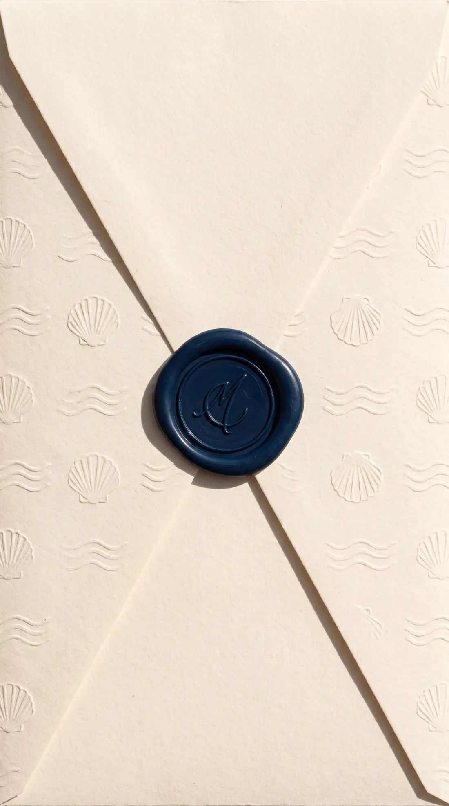
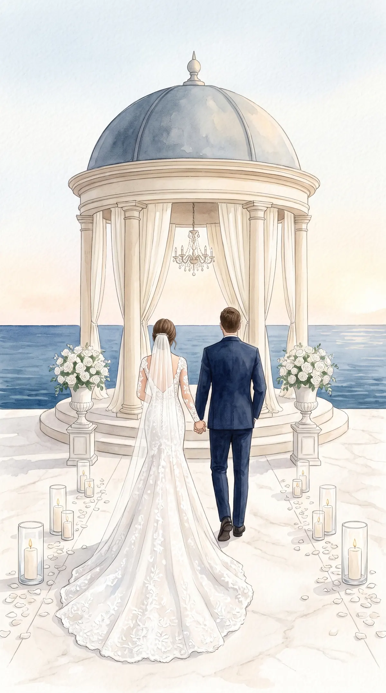
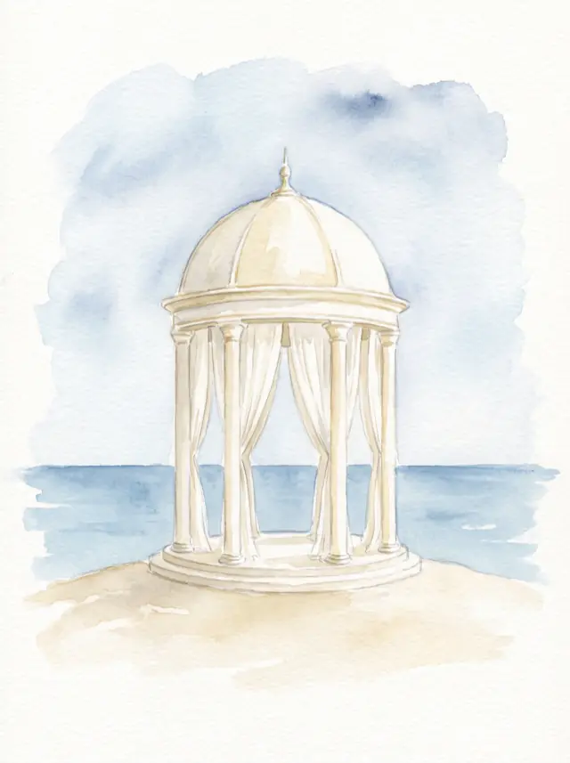
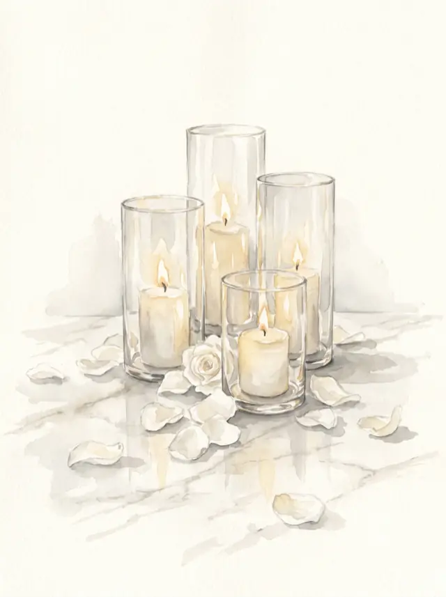
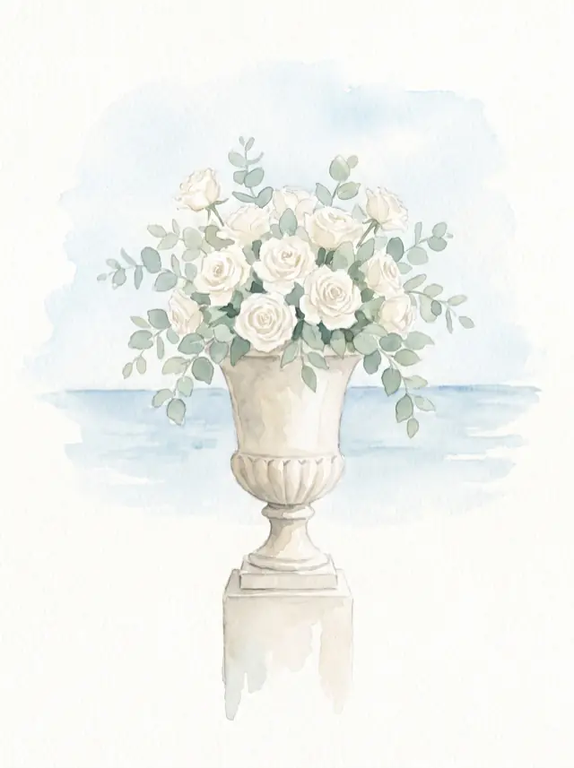
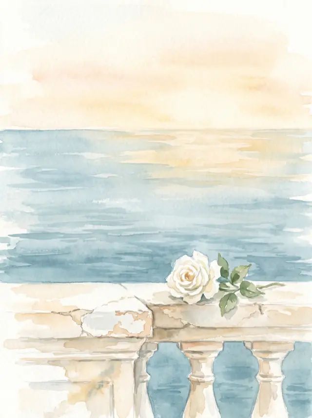

Press the seal

Wir heiraten
5 June 2027
Counting the days
Until we stand by the water.
Today is the day.
Our journey
Rotterdam, rain, a burst tyre. Matteo offered to push. It was four kilometres.
Forty degrees, no shade, and Lina's first conversation with a grandmother who speaks no German at all.
Bought on a night when both of us were too tired to be sensible. We regret nothing.
Among the tomatoes, without a ring, with a glass of wine. The neighbours applauded before we could say anything.
A glimpse of us




What we have prepared for you
At the harbour. There will be granita and shade.
In the chapel above the bay.
A four-hour lunch. Yes, four.
Siesta, sea, sleep if you like.
Dinner again, this time by the water.
On the square in front of the church.
Or whenever the music stops.
Join us
Everything you need to know.
Ceremony at 12:00 noon
A whitewashed chapel above a bay, with a pavilion by the water. The last stretch is gravel — leave the heels at home.
Via della Cala 3
96017 Noto, Sizilien
One request
Linen, cotton, light colours. It is around thirty degrees at midday with almost no shade — bring hats. The ground is stone or sand throughout.
We would love to see you
Please reply by 1 March 2027 — because of the flights.
The email should have opened. If not: here.
On our own behalf
You are flying to Sicily for us — that is more than enough. If you would still like to leave something: the roof of the house is the same one it had in 1961.
Plan your visit
So your visit is as comfortable as it can be.
On site
Ten rooms
Rooms held until Easter
12 km
Four stars
Rooms held under "Lina & Matteo"
15 km
Family run
Affordable and warm
If you are staying on, these places are worth your time:
You asked
If your card names a guest: gladly, please enter them above. Otherwise the bay gets too crowded.
Absolutely. There is sea, sand and a great-aunt who has wanted nothing more than to watch them for forty years.
Around thirty degrees at midday, twenty-two in the evening. Water everywhere, shade only under the pergola.
No. But "grazie" and "un altro bicchiere" will get you further than you think.
Let us know early and all is well. We will bring you lemons.